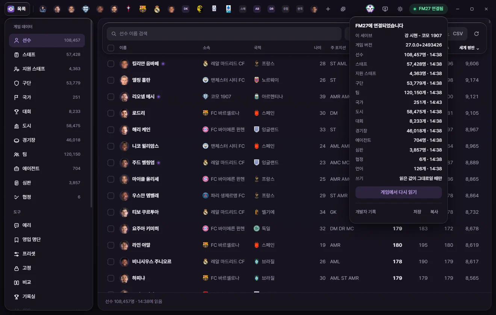
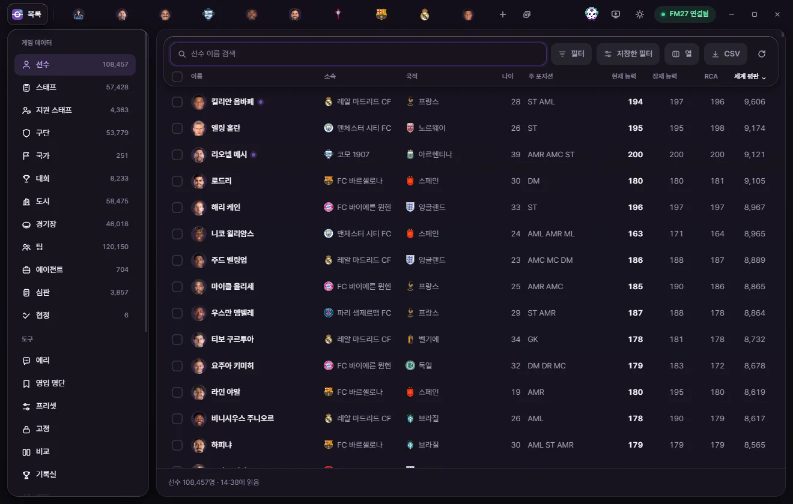
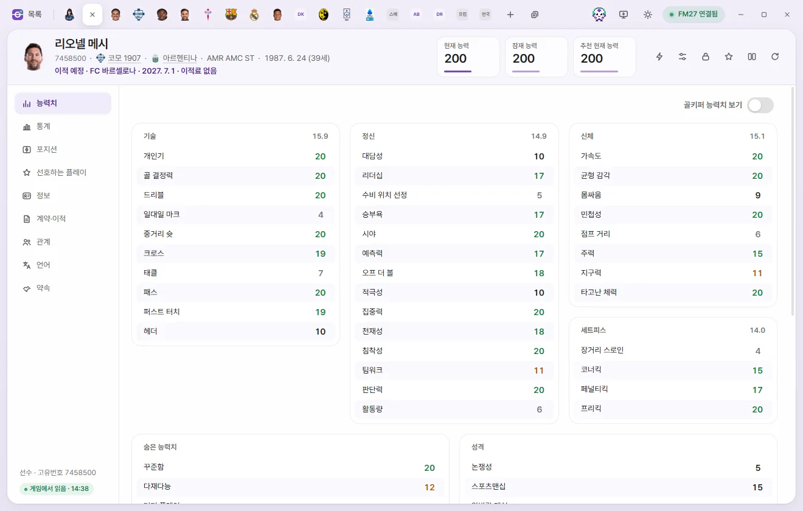

시작하기
처음 시작하기
FMLE를 설치하고 FM27에 연결한 뒤, 선수 한 명의 값을 고쳐 게임에 저장하기까지 순서대로 따라 합니다.
준비할 것
- Windows 10 또는 11(64비트)
- Football Manager 27(FM27) 판 27.0.0+2493426. 판이 다르면 FMLE가 게임에 연결하지 않습니다.
- 처음 값을 고쳐 보기 전에 세이브를 따로 복사해 두면 안심입니다. 고친 값은 FM에서 게임을 저장하면 세이브에 그대로 남습니다.
1. FMLE 설치하기
- 설치 파일 받는 곳에서 맨 위 판의
FMLE_…_x64-setup.exe하나만 받습니다. - 받은 파일을 실행하고 다음 → 설치 → 마침을 누릅니다.
- 시작 메뉴에 FMLE가 생깁니다.
파란 "Windows의 PC 보호" 창이 뜨는 경우, 관리자 권한이 필요한지 등 자세한 것은 설치·업데이트·지우기에 있습니다.
2. FM27을 켜고 세이브 불러오기
FM27을 켜고 평소처럼 세이브를 불러옵니다. FMLE는 지금 게임이 열어 둔 세이브의 값을 읽고 씁니다. 새 게임이든 하던 세이브든 상관없습니다.
FMLE를 먼저 켜도 됩니다. 게임을 켜고 세이브를 불러오면 FMLE가 알아서 연결합니다.
3. FMLE 켜고 연결 확인하기
시작 메뉴나 바탕화면의 FMLE를 누릅니다. 처음에는 시작 화면이 뜨고 세 단계가 차례로 체크됩니다.
| 단계 | 하는 일 |
|---|---|
| FMLE 준비 | FMLE가 화면을 준비합니다. |
| 게임 찾기 | 켜져 있는 FM27을 찾습니다. 찾으면 '게임 찾기 · FM27 연결됨'으로 바뀝니다. |
| 게임 읽기 | 게임의 모든 목록을 처음 한 번 읽습니다. 몇 %까지 읽었는지 보입니다. |
다 읽으면 시작 화면이 사라지고 목록 화면이 나옵니다. 오래 걸리면 아래쪽 기다리지 않고 들어가기로 먼저 들어가도 됩니다. 읽기는 뒤에서 계속됩니다.
게임이 꺼져 있거나 세이브를 아직 불러오지 않았다면, 시작 화면이 그 사실을 알려 주고 잠시 뒤 목록 화면으로 넘어갑니다. 그 상태로 두고 게임에서 세이브를 불러오면 됩니다.
연결 표시 읽는 법
창 오른쪽 위의 둥근 표시가 지금 게임과의 연결 상태입니다. 초록 점에 FM27 연결됨이 보이면 준비가 끝난 것입니다.
| 표시 | 뜻 | 할 일 |
|---|---|---|
| 확인 중 | 게임을 찾고 있습니다. | 잠시 기다립니다. |
| FM27 꺼짐 | FM27이 꺼져 있습니다. | 게임을 켜고 세이브를 불러오면 자동으로 연결됩니다. |
| FM27 시작 중 | 게임이 아직 켜지는 중입니다. | 메인 메뉴까지 뜨면 자동으로 연결됩니다. |
| 세이브 대기 | 세이브를 아직 불러오지 않았습니다. | 세이브를 불러오면 자동으로 읽습니다. |
| 읽는 중 | 게임에서 처음 한 번 읽고 있습니다. | 다 읽으면 목록과 탭이 기다림 없이 바로 열립니다. |
| FM27 연결됨 | FM27에 연결되었습니다. | 이제 값을 읽고 쓸 수 있습니다. |
| 버전 다름 | 지원하는 버전과 다른 게임입니다. | 문제가 생겼을 때를 봅니다. |
| 열 수 없음 | 게임을 열 수 없습니다. | 게임을 관리자 권한으로 실행했다면 FMLE도 관리자 권한으로 실행합니다. |
| 오류 | 게임을 읽다가 문제가 생겼습니다. | 잠시 뒤 다시 시도합니다. |
표시를 누르면 연결 상태 창이 열립니다.


- 이 세이브: 게임이 지금 열어 둔 세이브입니다.
- 게임 버전: FMLE가 읽을 수 있는 FM27 판입니다.
- 선수, 스태프, 구단 …: 종류마다 읽어 온 개수와 읽은 시각입니다.
- 쓰기: 연결되어 있으면 '읽은 값이 그대로일 때만'입니다. FMLE는 게임 값이 화면에 읽어 온 값과 같을 때만 씁니다.
- 게임에서 다시 읽기(연결되어 있을 때) / 다시 확인(연결되지 않았을 때): 게임을 다시 읽거나, 게임을 다시 찾습니다.
- 개발자 기록 저장 · 복사: 문제가 생겼을 때 개발자에게 보낼 기록입니다. 문제가 생겼을 때를 봅니다.
4. 목록에서 선수 하나 열기


- 왼쪽 게임 데이터에서 선수를 누릅니다. 종류 옆 숫자는 게임에서 읽은 개수입니다.
- 위쪽 검색 칸에 선수 이름을 넣습니다.
- 목록에서 선수 줄을 누릅니다. 창 위쪽에 그 선수의 탭이 생기고 편집 화면이 열립니다.
줄 왼쪽의 네모 칸을 누르면 탭을 열지 않고 고르기만 합니다. 여러 명을 골라 한 번에 다루는 방법은 목록 쓰기에 있습니다.
5. 값 하나 고치기


- 탭 왼쪽에서 능력치를 고릅니다.
- 바꿀 칸(예: 크로스)을 누릅니다. 값 자리에 − 숫자 + 가 나옵니다.
- 값을 바꿉니다.
- − / + 를 누르거나, 숫자를 바로 입력합니다.
- 키보드 ↑ ↓나 마우스 휠로 한 칸씩 바꿉니다. Shift를 누른 채 하면 더 크게 바뀝니다(능력치는 5씩).
- Enter를 누르거나 다른 곳을 누르면 정해집니다. Esc는 이번에 바꾼 것을 취소합니다. Tab은 정하고 다음 칸으로 갑니다.
바꾼 칸에는 원래 값이 옆에 작게 남습니다. 탭 아래쪽에는 바꾼 값 N개 막대가 뜨고, 처음 두 개가 '크로스 19→20'처럼 보입니다.
능력치를 고칠 때 보이는 '내부' 숫자는 게임이 화면의 1~20보다 잘게 저장하는 값입니다. 원래 값으로 되돌리면 FMLE는 게임의 원래 잘게 나눈 값을 그대로 둡니다.

6. 게임에 저장하기
저장 단추는 두 곳에 있습니다.
| 단추 | 어디에 | 무엇을 쓰나 |
|---|---|---|
| 저장 | 탭 아래쪽 '바꾼 값' 막대 | 이 탭에서 바꾼 값만 게임에 씁니다. |
| 저장 N (모두 저장) | 창 위쪽 오른쪽 | 열어 둔 모든 탭에서 바꾼 값을 탭마다 차례로 씁니다. N은 바꾼 값의 개수입니다. Ctrl+S도 같습니다. |
위쪽 저장 N 단추는 바꾼 값이 있을 때만 보입니다. 바꾼 값이 없을 때 Ctrl+S를 누르면 '저장할 값이 없습니다'라고 알려 줍니다.
저장을 누르면 FMLE는 이렇게 합니다.
- 게임의 지금 값이 처음 읽어 온 값과 같은지 확인합니다.
- 같으면 새 값을 씁니다.
- 다시 읽어서 정말 그 값이 되었는지 확인합니다.
끝나면 'N개 값을 게임에 썼습니다 · 다시 읽어서 같은 값인지 확인했습니다'가 뜹니다. '모두 저장'은 'N개 값을 게임에 저장했습니다 · 탭 N개'라고 알립니다. 일부 탭을 쓰지 못하면 어느 탭에 바꾼 값이 남아 있는지 알려 줍니다.
그사이 게임이 같은 값을 바꿨다면 쓰지 않습니다. 이때 FMLE는 게임을 다시 읽고, 바꾸려던 값은 탭에 그대로 남겨 둡니다. 다시 확인하고 저장하면 됩니다. 다른 이유로 쓰지 못했을 때의 안내는 문제가 생겼을 때에 모았습니다.
저장 단추가 눌리지 않을 때
| 단추 글 | 뜻 |
|---|---|
| 연결되면 적용 | 게임에 연결되어 있지 않거나, 이 탭의 값이 지금 켜져 있는 게임에서 읽은 값이 아닙니다. 연결된 뒤 탭 머리의 게임에서 다시 읽기(둥근 화살표)를 누르면 쓸 수 있습니다. |
| 저장(흐리게) | 지금 다른 값을 읽거나 쓰는 중입니다. 끝나면 다시 눌립니다. |
| 게임 없음 | 게임에 연결하지 않은 화면입니다. |
저장하기 전에 되돌리기
탭 아래쪽 되돌리기는 그 탭에서 바꾼 값을 모두 바꾸기 전으로 돌립니다. 아직 게임에 쓰지 않은 값만 돌아갑니다. 이미 저장한 값을 되돌리려면 원래 값으로 다시 고쳐 저장합니다.
세이브 파일에 남기기
FMLE가 쓴 값은 그 순간 실행 중인 게임에 들어갑니다. FM에서 게임을 저장해야 세이브 파일에도 남습니다. FM에서 저장하지 않고 세이브를 다시 불러오면 바꾼 값은 사라집니다.
어떤 기능이 바로 게임에 쓰이고, 어떤 기능이 날짜가 넘어가야 효과가 나는지는 값이 게임에 들어가는 때에 정리했습니다.